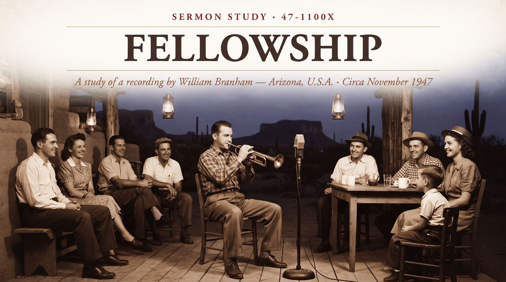

William Branham · Arizona, U.S.A. · Circa November 1947
♫ Listen to or read the recording at Voice Of God Recordings →

Not everything in the Branham archive is a sermon. This one is seven minutes long, and there's no text, no altar call, and honestly not much preaching at all. It's a recording of an evening of fellowship — trumpet solos, easy conversation, a little hog-hunting talk — captured, almost by accident, on the same reel-to-reel machine that usually caught his sermons. I'm including it here anyway, because I think the quiet, human moments in someone's ministry are worth studying just as much as the pulpit ones, maybe more.
By late 1947, Branham was several months into the healing-campaign circuit that would consume the rest of his life — the same grinding, city-to-city schedule he describes so vividly in "Faith Is The Substance" from earlier that year. This recording catches him on a rare unwound evening in Arizona, staying with a family named Mc Anally, alongside F. F. Bosworth. There's no auditorium, no prayer line, no urgency. Just a trumpet, a microphone somebody apparently left running, and people enjoying each other's company.
The most historically interesting name here is Bosworth's. F. F. Bosworth was already a well-known figure in Pentecostal circles by 1947 — a co-founder of the Assemblies of God decades earlier, and by this point a seasoned evangelist in his own right who had thrown his considerable reputation behind Branham's young healing ministry, effectively vouching for him to a much wider audience. In this recording he's not preaching or endorsing anything, though — he's just playing trumpet solos on request, including a rendition of "Down At The Cross" that Branham calls an old favorite.
Also on the recording, briefly, is Branham's wife, Meda, saying a few words about being glad to be in Arizona and to have met the Mc Anallys. Recordings that capture her voice at all are uncommon in this collection, which makes even a sentence or two worth noting.
The rest of the tape is warm, unremarkable small talk — Brother Hooper is asked for a word and mostly demurs, Brother Mc Anally gets ribbed as "the best hog hunter in the country" (with Branham claiming the title for himself, tongue-in-cheek, when Mc Anally isn't around), and Sister Mc Anally is coaxed into saying a few shy words of her own. Branham signs off thanking the family for their hospitality on the trip.
Partly because it's honest. The "Faith Is The Substance" sermon shows Branham exhausted, sacrificial, and carrying the weight of a ministry he describes as almost more than he can bear. This recording shows the other side of the same season — an evening where he's just a guest at someone's home, enjoying music and friends. Neither picture is the whole man, but you need both to get an accurate one. For anyone trying to understand Branham as a historical figure rather than only a voice on a pulpit recording, moments like this are quietly valuable.
Source: Fellowship, recorded circa November 1947, Arizona, U.S.A. Text © Voice Of God Recordings. This study is a paraphrase and personal commentary, not a reproduction of the recording.
← Back to Sermon Studies